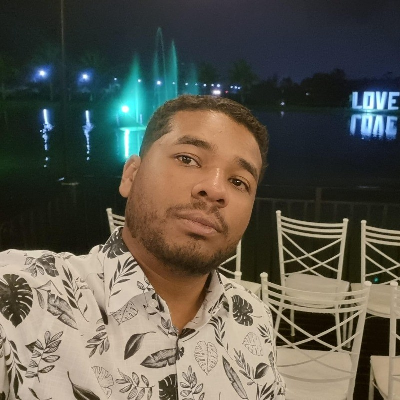

DevOps Engineer
Analista de infraestrutura | Cloud | DevOps | Monitoramento | SRE | CI/CD | AWS | Docker.
Analista de infraestrutura | Cloud | DevOps | Monitoramento | SRE | CI/CD | AWS | Docker.
Olá, meu nome é Luiz Fernando Maia da Silva. Sou formado em Redes de Computadores e possuo a certificação AWS Certified Cloud Practitioner. Atualmente, estou cursando uma pós-graduação em DevOps & Continuous Software Engineering pela PUC Minas, com previsão de conclusão em dezembro de 2025.
Com mais de dois anos de experiência em AWS, trabalhei com uma variedade de serviços, incluindo FinOps, EC2, ECS, IAM, S3, Route 53, CloudFront e VPC. Essa experiência me proporcionou uma sólida compreensão das melhores práticas e dos desafios associados à computação em nuvem.
Atualmente, estou aprimorando meus conhecimentos através do curso de especialização AWS da Cloud Treinamentos, que abrange desde a introdução à AWS até módulos avançados como CodeCommit, CodeBuild, CodeDeploy e CodePipeline.
Além disso, estou me aprofundando na cultura DevOps através do curso DevOps Pro do Fabricio Veronez. Este curso cobre desde os conceitos básicos até os mais avançados e inclui tópicos como introdução ao DevOps, Linux, Git, GitHub Actions, Docker, Kubernetes, Jenkins, Prometheus, Terraform e Ansible.
Projetos envolvendo Kubernetes, Docker, AWS e Azure, focados em automação e infraestrutura escalável em nuvem. Em breve, adicionarei detalhes sobre meus projetos relacionados a cada um desses tópicos.
Entre em contato através das minhas redes sociais: